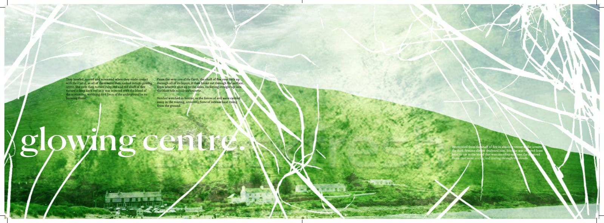
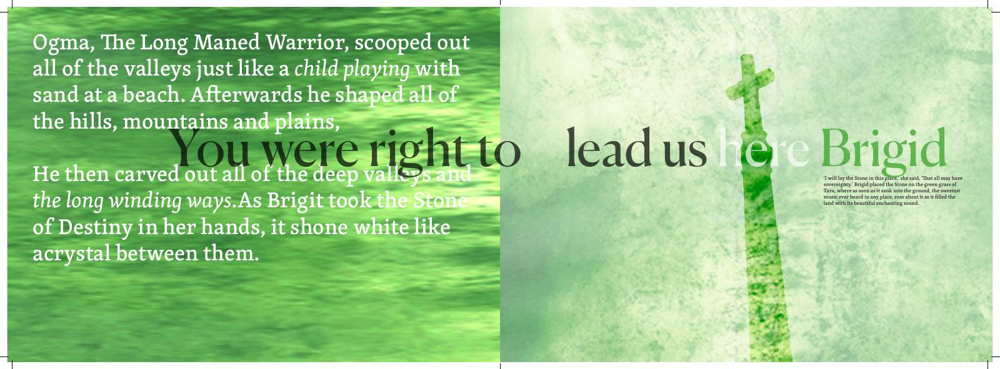
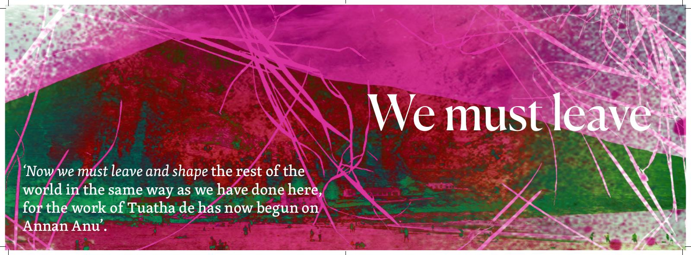
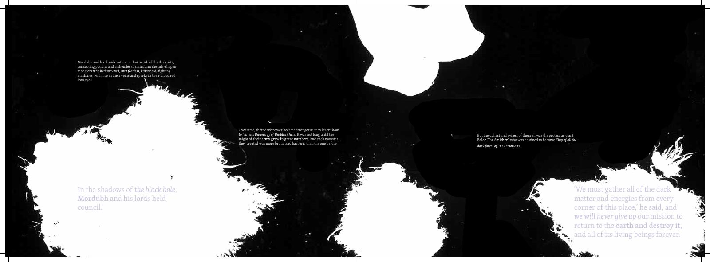
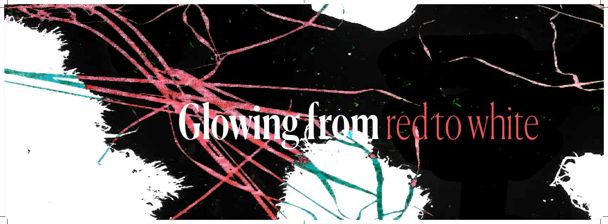
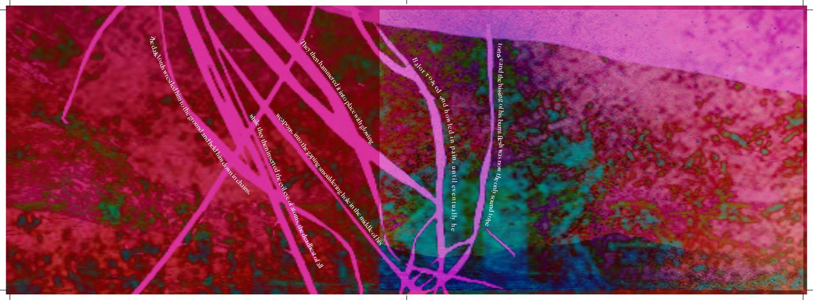
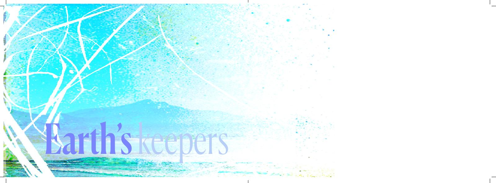
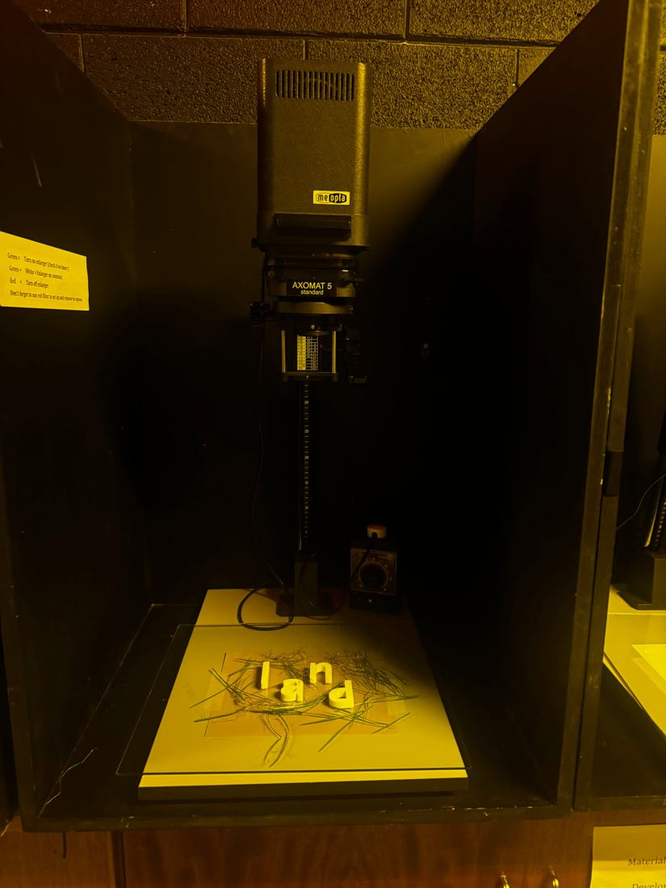
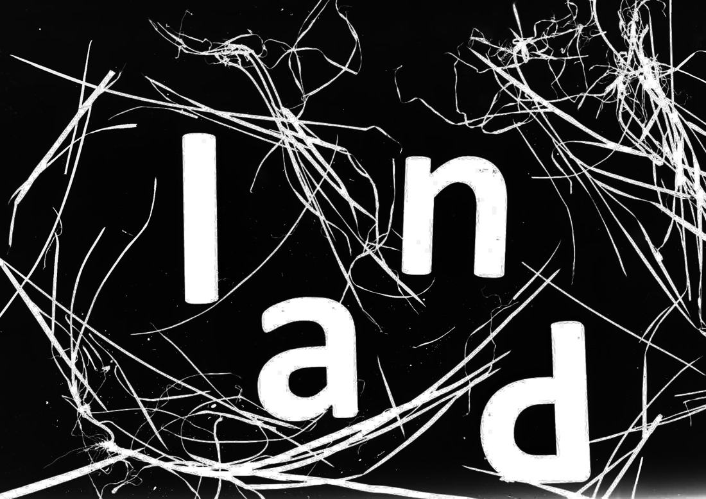
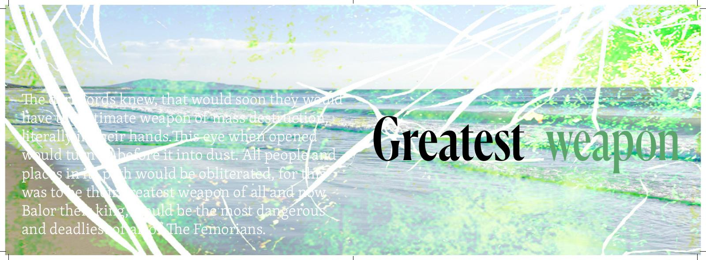

Case study · NASA Space Apps Challenge, Athlone · 2026
Satellite data a farmer can read at a glance
GrowÉire helps Irish crop farmers compare crop rotations using NASA Earth observations. Three short questions about one field, then one plain answer. Designed and built by a team of three in a 40-hour hackathon.
A 40-second walkthrough of the live site: landing page, the four-step flow and the answer on a phone. No sound.
My role
UX/UI designer: user flow, interface design and accessibility in Figma, handed off to development
NASA satellites have recorded rainfall, soil moisture, crop greenness and terrain over Ireland for decades. That data could help a farmer decide what to grow next, but it lives in scientific formats few farmers would ever open.
We chose the Field Shift challenge because we wanted to build something meaningful for the Irish farming community.
How might we turn decades of satellite records into one answer a farmer can trust and act on?
02 · Users
Designing for farmers aged 45–65+
Our main users are Irish tillage farmers growing barley, wheat and oats. Farm advisers and regional teams are secondary users. With most farmers aged 45 to 65 and older, accessibility and ease of use guided every decision.
Three audiences, with farmers first.
01
Plain words
No jargon. A “What does this mean?” button explains any term, on every screen.
02
One question at a time
Four short steps, with progress always visible.
03
Big and readable
Large tap targets, and an A+ button to make all text bigger.
04
Answer first
One plain sentence about this field, then the evidence.
05
Tap, don't type
Crops and priorities are large tiles with icons and labels.
06
Honest about limits
Every answer says what we don't know yet, and that the farmer decides.
03 · User flow
Three questions, one answer
The journey is four steps, with the map always beside it so farmers can see which field they are asking about. No account and no long forms.
Step 1 · WhereSearch a town or townland, then tap the field on the map, or draw its edges.Step 2 · What you grewCrop tiles instead of typing. A useful first fact appears straight away, before the farmer has finished.Step 3 · What mattersPick up to three priorities. A number shows which one counts most.
Step 4 · Your answer
The answer leads with one sentence, for example “March is the riskiest month for spring barley here. In about 9 years in 10 it is too frosty.” Below it: a month-by-month risk grid using colour, an icon and a word together, the current rotation compared with at least two alternatives, and questions to ask a farm adviser.
04 · Landing page
A front page that explains itself
The landing page shows the real product, explains the three steps in plain language, and is open about which NASA data sits behind every answer.
How it works: the product itself, beside three plain steps.The data behind the answers: 6 NASA missions, including MODIS, Landsat, SMAP, GPM IMERG, ECOSTRESS and SRTM.Outcomes
What we delivered, and what I learned
40hours · from idea to a working product
4steps · from field to answer
6NASA missions · combined in one answer
Liveonline, free, no account needed
Key learning
When data is complex, the design job is translation. Leading with one plain sentence, then letting people explore the evidence, made decades of satellite records feel usable.
Design at hackathon speed
Every Figma decision had to be buildable the same day. Working side by side with developers meant simplifying early and handing off clearly.
Next steps
Test the four steps with Irish tillage farmers and Teagasc advisers, and check text sizes and reading level with older users. We haven't tested with farmers yet.
IrelandBA (Hons) Graphic and Digital Design, TUS Athlone
I'm a UX/UI designer who enjoys turning complex ideas into simple, thoughtful digital experiences.
I love the balance between creativity and problem-solving: understanding how people think, exploring ideas and making things that feel intuitive to use.
Outside of individual projects, I enjoy collaborating, learning from other creatives and exploring new ways to approach design.
I enjoy taking part in projects where I can collaborate with people from different backgrounds and turn ideas into something real.
Recently, I participated in the NASA Space Apps Hackathon in Athlone, where our team developed GrowÉire, a web app helping Irish farmers make more informed decisions using NASA Earth observation data.
In just 40 hours, we went from an idea to a working product. It was a great opportunity to work closely with developers, make quick design decisions and see our ideas come to life.
Multisensory Storytelling Designer · Collaboration with LauraLynnLauraLynn Children's Hospice × Technological University of the Shannon (TUS)
Collaborating with LauraLynn on accessible multisensory storytelling for children and young people with complex needs, working directly with a LauraLynn representative.
Developing original illustrated storytelling concepts and optional physical sensory experiences, informed by research into accessible communication, visual storytelling and sensory engagement.
Exploring a caregiver-led digital storytelling companion with adaptable text, illustrations, sound and optional tactile prompts.
Translating research and creative exploration into storyboards, interface concepts and interactive prototypes.
University collaboration project; not an employment position with LauraLynn.
May – Jul 2025
Digital Marketing InternTop Digital Marketing Experts · remote
Set up and optimised Google Ads and Facebook/Instagram campaigns across 7 client accounts.
Ran website audits, including a full audit for Bay River College, finding what stopped people from finding and using each site, and helped implement the fixes.
Supported performance reporting, data analysis and CRM automation in GoHighLevel.
What it taught me about UX: campaign and site data show where real people drop off, and design decisions are stronger with numbers behind them. Experience letter available on request.
Feb 2023
Graphic and Web Design InternVitalis GmbH, Leipzig area, Germany · Erasmus+ programme
Web design basics: navigation, layout, colour, type and augmented reality.
Optimised websites for smartphones and built web pages with HTML.
Developed animations and interactive content, and prepared graphics for print and screen.
Feedback from the programme: a “very good ability to see and describe a problem” and to review a solution and improve it.
04 / Education
2023 – 2027
BA (Hons) Graphic and Digital DesignTechnological University of the Shannon (TUS), Athlone
Jun 2023
QQI Level 5 Certificate in Multimedia ProductionFurther Education and Training Award, NFQ Level 5
05 / Industry exposure
Mar 2023Immersion
Microsoft Ireland: Women in Tech SummitMicrosoft Headquarters · Leopardstown, Dublin
Guest at Microsoft Ireland's Women in Tech forum at its Dublin headquarters. The summit provided valuable insight into how a global technology company operates: how teams collaborate, how products move from idea to release, and the range of roles behind a single piece of software.
A highlight was a hands-on session with Microsoft HoloLens, a mixed-reality headset: using hand gestures to move digital objects, judging depth, and experiencing where the physical and the digital meet. The experience strengthened my interest in interaction design and in designing around how people naturally move, reach and react.
Microsoft HQ · Leopardstown, Dublin
What I took into my UX practice
Gestures should feel natural before they feel clever. Depth can show hierarchy as clearly as size or colour. And the best interfaces respect the body, reach and space of the person using them.
06 / Skills & expertise
01 / UX & Research
User interviewsAffinity mappingPersonas & JTBDJourney mappingInformation architectureUser flowsWireframingUsability testingWCAG accessibility
FigmaFigJamAdobe IllustratorAdobe PhotoshopAdobe InDesignAdobe After EffectsWordPressGoogle AdsGoHighLevel
05 / Front-end
HTML5CSS3JavaScript · basic
07 / Languages
English · FluentUkrainian · NativeRussian · Native
08 / How I work
Research before pixels
I talk to people first. Lunra changed direction because of what five interviews revealed.
Every feature has a reason
Each feature traces back to a user insight. If it can't, it doesn't ship.
Accessible from the first colour
I audit contrast, touch targets and motion settings during exploration, so accessibility is built into the foundation rather than treated as a final checklist.
Words are design
I write interface copy as carefully as I draw screens, because a kind sentence can change how a product feels.
Solo: research, UX strategy, flows, design system and a 12-screen interactive prototype
Status
Concept prototype, not a launched product. Usability testing planned, not yet run
The 30-second overview
The challenge
Existing screen-time tools often emphasise restrictions and usage limits, which can create frustration or guilt.
The solution
Lunra is a digital wellbeing app concept that helps young adults build a healthier relationship with their phones through personal intentions, gentle reminders, mood reflection and mindful alternatives.
Audience
18–25 primary (interviewed) · 26–34 secondary (assumption, not yet researched)
Deliverables
Research findings, personas, user journey, user flows, design system and a 12-screen interactive prototype.
DiscoverDesk research and five user interviews.
DefineUser needs, segments and personas.
MapUser journeys and key behavioural triggers.
IdeateThree dashboard concepts explored.
DesignTwelve screens and a cohesive design system.
ValidateUsability testing planned.
The problem
Screen time isn't the whole story
Many digital wellbeing tools measure success through reduced screen time. However, my initial research suggested that the amount of time spent on a phone does not always reflect how people feel about their usage.
Some participants described feeling guilty after spending time on their phones, even when they were using them to relax, connect with others or complete meaningful tasks.
This raised a design question: could digital wellbeing be supported through awareness and personal choice, rather than restrictions alone?
App
Approach
What it measures
What I wanted to explore differently
iOS Screen Time
Daily reports and app limits
Minutes used
A number with no context feels like a verdict
Opal
Blocks distracting apps during sessions
Time kept off apps
Removes the way people relax
Forest
Grows a virtual tree while you stay off your phone
Time kept off the phone
Frames all phone use as failure
Lunra
Intentions, check-ins, gentle pauses with a choice
How the time felt
An alternative to explore: reflection and choice alongside awareness of time
How might we help young adults become more intentional about their phone use without introducing additional guilt, pressure or unnecessary restrictions?
Lunra explores an alternative approach. It doesn't claim that screen-time blockers are ineffective: for some people, hard limits are exactly what helps.
Who it's for
Primary · 18–25
Older Gen Z: students and recent grads
Doomscrolling, comparing themselves on social media, and phone use eating into sleep and study.
Researched: interviews covered this group (ages 20–25).
Secondary · 26–34
Young professionals
Motivated by productivity and work-life balance, and want to be more present with family and hobbies.
Hypothesis from desk research. Next step: 5 interviews with this group.
Why this age group: desk research
Desk research: Ofcom's Online Nation 2025 report found UK 18–24 year olds spend about 6 h 20 min online a day outside work, against 4 h 30 min for adults overall.
Source: Ofcom, Online Nation 2025 (UK data, used as the closest proxy for Ireland).
Research approach
Five conversations, one clear objective
Research objective
Understand how young adults feel about their phone use, what triggers it, and what kind of support, if any, they would welcome.
Participants
5 people aged 20–25, inside the primary group.
Use a smartphone every day, including social media
Want to change how they use their phone
Format
Semi-structured, one-to-one interviews. Open questions, with follow-ups wherever something felt important.
Topics covered
How time on the phone feels
When and why the phone gets picked up
What help, if any, would feel welcome
From notes to themes: affinity mapping
GuiltFeels bad after seeing a daily totalStopped opening screen-time reportsGuilty even after time spent relaxing or talking to friends
Phone as restScrolls in bed to wind downThe phone is how they keep in touchOpens apps on autopilot when bored
AutonomyOutside rules feel like controlWants to decide their own balancePrefers a choice to a lock
A simplified, redrawn view of my affinity map. Each note is a short observation from the interviews, grouped into the themes that came up again and again.
Why five
Interviews look for patterns, not statistics. Nielsen Norman Group suggests starting with about 5 to 6 interviews and adding more only while new themes keep appearing.
Limitations
Five interviews can reveal possible patterns, but cannot show how common they are in the wider population.
One age group only. The 26–34 group has not been interviewed.
Self-reported behaviour. I didn't observe real phone usage.
Key research findings
What the interviews revealed
Finding 1
Guilt surrounds phone use
Observation
Participants described feeling guilty about time on their phones, including time spent relaxing or talking to friends.
Evidence
From my interview notes: “I feel guilty, but I can't disconnect.”
Interpretation
A daily total on its own may add to the guilt rather than help people change.
Design opportunity
Show usage against the person's own intention, and ask how the time felt.
Finding 2
The phone is also rest
Observation
Participants use their phones to unwind and keep in touch, not only as a distraction.
Evidence
From my interview notes: “I know I'm on my phone too much, but it's how I relax.”
Interpretation
Blocking apps would remove one of the ways people rest, without offering anything in its place.
Design opportunity
Offer alternatives, like a one-minute breath or a short walk, instead of walls.
Finding 3
People want autonomy
Observation
Participants wanted a balance they decide for themselves. Rules set from outside felt like control.
Evidence
A theme repeated across the notes: balance, not restriction.
Interpretation
Restrictions may encourage people to override them rather than reflect.
Design opportunity
User-set intentions, nudges with a choice, and a “Remind me less” option.
These findings are themes from five qualitative interviews. They point to possible patterns to design for and test, not proven facts about all young adults.
The research-driven pivot
Research changed the product, not just the screens
My first concept assumed people needed stronger limits. The interviews pointed somewhere else, so I changed direction rather than looking for evidence that confirmed the original idea.
Before research
Screen-time restriction
Help people reduce phone use through limits, totals and blocked apps.
→
After research
Intentional phone use
Personal intentions, gentle nudges, reflection and optional alternatives to scrolling.
Showing the total will motivate changeTotals made participants feel guilty (Finding 1)Context matters more than the numberUsage shown against the user's own intention
Less phone time is always betterThe phone is also how people rest (Finding 2)Replace the scroll, don't just stop itBreathing and focus walks as alternatives
People need firm limitsOutside rules felt like control (Finding 3)Choice beats enforcementNudges with three options, never a lock
Feature list
Removed app blocking and streaks. Added mood check-ins and reflections. (Findings 1, 3)
Wireframes
Today moved from a big total (direction A) to usage against the user's own intention (direction C). (Finding 1)
User flow
Nudges lead to a breathing pause or a walk, never a lock screen. (Finding 2)
The trade-offs
Dropping restrictions means Lunra may help less for people who want hard limits. It's also harder to show a simple “time saved” result, and gentle nudges can be ignored. I accepted these trade-offs because the research pointed to guilt, not a lack of rules, and they're exactly what usability testing needs to check.
Primary persona and journey
Who, and what triggers the scroll
Primary · 18–25
Aoife, 22
Final-year student, Dublin
“I feel guilty, but I can't disconnect.”
Triggers
Opens Instagram on autopilot when bored between lectures
Doomscrolls in bed before sleep
Loses focus while studying
Goals
Better evenings and sleep
Feel in control, not judged
Frustration
Screen-time reports make her feel judged, so she stopped opening them.
Research-based: her goals, triggers and frustration come from the interview themes (Findings 1–3). Her name, age, course and city are illustrative.
Secondary · 26–34
Cian, 29
Marketing executive, Galway
Wants his evenings back for his partner and his running.
Triggers
Checks email and news first thing in the morning
Picks up the phone when work stalls
Scrolls on the sofa instead of talking
Goals
Productive days, switched-off evenings
Be present with family and hobbies
Frustration
Hard limits get in the way at work, so he turns them off.
Proto-persona: assumptions requiring further research. Built from desk research only. Nobody in this group has been interviewed yet.
Aoife's evening today
The emotional curve is illustrative, drawn from the interview themes. It wasn't measured.
Stage
Home after lectures
Scrolls to unwind
Loses track of time
Sees her screen time
Feels guilty
Scrolls again
Thinking
“I just need 10 minutes.”
“This is nice.”
“Wait, it's 11pm?”
“4 hours. Again.”
“I've wasted the whole evening.”
“Whatever, may as well.”
Feeling
Pain point
No plan for the evening; the phone is the default
None yet: rest is valid
No gentle cue that time has passed
A total with no context feels like a verdict
Guilt, with no next step
Scrolling to escape the feeling
Design opportunity
Help her set an intention for the evening
Protect rest without judging it
A timely, gentle check-in
Show progress against her own goal
Turn the feeling into reflection
Offer an alternative, not a lock
Lunra response
Set an intention
Let rest be rest
One gentle nudge
Compare to her own goal
Ask how it felt
Offer a pause, not a lock
Product strategy
Pause, Focus, Reflect, Connect
Instead of asking for willpower at the worst moment, Lunra uses habit design: a cue, a better option, and a small reward. The four brand words became four mechanisms.
pause
Friction with a choice
After a long scroll, a nudge slides up with three options: breathe, walk or keep going. The user stays in charge, so there's nothing to rebel against. “Remind me less” is always there.
focus
Replacement habits
A 1-minute breath or a 20-minute walk replaces the scroll instead of just stopping it, which answers finding 2: people need another way to rest.
reflect
Mindful prompts
Naming a mood takes one tap and breaks autopilot. Over a week, check-ins show what actually made the person feel better.
connect
Own intentions, gentle rewards
People pick their own intentions, so going over isn't failure. Finishing a walk ends with a glowing moon, not a streak, so a missed day never resets anything.
Research insightPrincipleFeatureIntended benefit (hypothesis)
Scrolling happens on autopilotPauseA nudge with three choicesA moment of awareness, without losing control
The phone is also rest (F2)FocusOne-minute breath, focus walkA different way to rest, not just less phone
Guilt surrounds phone use (F1)ReflectOptional mood check-ins, weekly patternsNoticing what helps, without judgement
People want autonomy (F3)ConnectPersonal intentions, “Remind me less”Goals that feel personal, not imposed
The benefits in the last column are hypotheses. They need usability testing and longer-term evidence before they can be called results.
Prioritisation
What made the first release, and what didn't
Feature prioritisation with an impact vs effort matrix
How I scored it: impact is my judgement of how directly a feature answers Findings 1–3; effort is my estimate of design and build complexity. These are design judgements, not engineering estimates.
Quick wins · high impact, low effort
Mood check-inOwn intentionPause nudgesReflections
Big bets · high impact, high effort
Focus walksWeekly insights
Fill-ins · lower impact, low effort
Wind-down mode
Rejected · conflicts with the research
App blockingStreaksFriend challenges
App blocking contradicts finding 3: people asked for balance, not control.
Streaks and friend challenges add exactly the pressure and guilt Lunra exists to remove.
Weekly insights only appear once there's data, so a new user never meets an empty report card.
Core MVP
Personal intentions
Gentle nudges
Mood check-ins
Simple reflection
Basic breathing and focus activities
Future exploration
Advanced personalised insights
Expanded mindfulness activities
Moon-flower garden (keep or cut after testing)
Additional integrations
Not prioritised
Punitive blocking: works against the autonomy people asked for
Competitive leaderboards: turn rest into a contest
Guilt-based streaks: a missed day becomes a failure
Social comparison: adds the pressure Lunra exists to remove
Product health
No streaks. So what brings people back tomorrow?
Streaks drive retention by making a missed day hurt. Lunra needs a reason to return that doesn't depend on guilt.
1 · It comes to you
Nudges arrive in the moment, after a long scroll, so Lunra is useful without being opened first.
2 · A ritual you choose
An opt-in evening check-in at a time the user picks, tied to their own intention, like “better evenings”.
3 · Curiosity, not pressure
Every week reveals one new pattern, like “calmer on the days you walked”. The reward is learning something about yourself.
4 · Easy to come back
Missed a week? “Welcome back”, never “you lost your streak”. No penalty means no reason to uninstall out of shame.
5 · Milestones of Stillness
Progress that only grows
Instead of counting days in a row, Lunra counts total minutes of calm: every breath and every walk, for life. Each session plants a glowing moon-flower in a small night garden.
Miss a week and nothing wilts. The garden can only grow, so showing up is rewarded and stopping is never punished.
Future exploration, not MVP. Whether it stays depends on usability testing. Try it: each tap adds a session.
36 min of stillness · 18 sessions
How I'd measure it: 4-week retention and check-ins per active week, not daily opens. A healthy user might check in a few times a week and still be the app's best outcome.
User flows
Twelve screens, three flows
Each flow has one job. Tap any screen to see it larger.
Flow 1 · Onboarding
Discover Lunra, understand its purpose, set an intention and decide on permissions, including saying no.
Flow 2 · Daily reflection
Review today against the intention, complete a mood check-in and explore weekly insights.
Flow 3 · Moments of calm
Receive a gentle nudge, choose an alternative activity and return to the day.
Alternative paths designed
Permission deniedNudge dismissedIntention exceededSession ended earlyNo usage data yetBack after inactive days
Each one is explained in Edge cases and accessibility below.
Visual design system
Soft to look at, strict underneath
Lavender#D8CFFF
Periwinkle#C6CBFF
Tide#CDEBFA
Irisbuttons
Indigotext
Nightwind-down
Type
lunra
lunra wants you to take a walk
What's your mood like right now?
Extra Light (200) appears only on display lines of 26px and above. All body copy stays in Regular (400) or Medium (500) at 15px or more, because thin weights blur on small, bright phone screens even when the contrast ratio passes.
Micro-interactions
Breathing orb grows and shrinks on a 12-second cycle with a spoken count.
Completion moon glows and fills when a walk ends.
Save wakes up only once a mood is picked.
Goal ticks update the button: “Continue with 2 intentions”.
Standardised components
Primary buttons: 56pt tall, fully rounded, one per screen
Chips, segments and icon buttons: 44pt tall minimum
Cards: soft white surfaces on the gradient, same corner radius across screens
States: selected (filled or outlined), disabled (Save before a mood is picked) and pressed
Key design decisions and iterations
What changed, and why
My first high-fidelity screens looked calm but failed people: white text on pastel was hard to read, and buttons were small and faint. I reworked them against the research and an accessibility check. These are expected improvements. Usability testing is the next step.
BeforeFails WCAG AA contrast (about 1.4:1)
After
Mood check-in
Identified problem
White text on pale blue (about 1.4:1 contrast) and small, faint mood buttons.
Design decision
Dark indigo text, larger mood buttons with colour dots, Save disabled until a mood is picked, and optional strength and context so weekly patterns can be shown.
Expected improvement
Easier to read and a clearer hierarchy, while still taking one tap.
Validation needed
Do participants understand the mood choice and the optional controls without help?
Before
After
Today
Identified problem
A bare “Your usage” bar: a number with no context, like the reports participants stopped opening.
Design decision
Usage shown against the user's own intention, in neutral colours, with three calm alternatives one tap away.
Expected improvement
Context without judgement, and a clear next step.
Validation needed
Do participants read the ring as their own goal, or as a limit?
Before
After
Focus walk
Identified problem
Hard-to-read timer and small controls.
Design decision
A readable timer, progress bar, full-size Pause and End buttons, and a completion moment.
Expected improvement
Easier to control mid-walk, and a calm sense of finishing.
Validation needed
Does ending early still feel okay rather than like failing?
Wireframe directions for Today
A · Rejected
Screen time4h 12mUp 18% from yesterday
Total by app. “Up 18% from yesterday” turns every day into a comparison, and ranking apps points at what you did wrong. It's the exact report Aoife had stopped opening.
B · Rejected
Daily limit
2h 10m
50 minutes left today
Ring and limit. A closing ring borrowed from fitness trackers reads as a target to hit or miss. “50 minutes left” makes the evening a countdown, and “Block apps” goes against finding 3.
C · Chosen
Good afternoon
Screen time today1h 30m of 3h
Moments of calm
Own intention plus calm options. The number is measured against a goal the user chose, in neutral colour, with a next step right below it. Context without judgement.
Prototype
Final prototype: try it yourself
Tap inside the phone like the real app. Try a focus walk and press End session to see the completion moment.
Rebuilt in HTML from my final screens so it runs here. Usage data, nudges and notifications are simulated: they show the intended behaviour, not a working app.
Edge cases and accessibility
Designing the unhappy paths
Real life is messy. These are the moments where a wellbeing app can make people feel worse, so each one got a deliberate answer.
An emergency call mid-walk
Lunra never locks the phone. Calls always come through, and in Sleep mode favourites still ring.
Going over the intention
No red, no warning. Today says “A bit over today. That's okay.” and offers wind-down.
Back after inactive days
There's no streak to break. The next check-in simply says welcome back, without counting missed days.
Ending a session early
Ending early still finishes with the moon moment and asks how it felt, never “you failed”.
Ignoring nudges
After three dismissals in a row, Lunra asks whether to nudge less instead of nudging more.
No access, or no data yet
Without screen-time access, or in the first days, Today shows the intention and a check-in instead of the ring. Insights appear only once there's enough data, and calm tools always work.
Accessibility: what I checked, and what's still to test
Checked · Nov 2026
Text contrast (WCAG 2.2)Indigo #2B2560 on lavender 9.3:1, on periwinkle 8.7:1, on tide 11.0:1. Secondary #4A4482 on lavender 5.9:1. White on iris buttons 6.5:1. All pass AA.
Touch targetsAll 73 controls in the 12-screen prototype measured at 44 × 44pt or larger. The audit caught chips and segments at 40pt, the sleep switch at 32pt and the slider at 28pt, so I raised them.
Reduced motionWith Reduce Motion on, the breathing orb stops and the spoken count still runs, so the exercise works without animation.
Not colour aloneSelected moods get an outline, selected chips fill dark, and controls expose their state to assistive tech (pressed, on or off).
Designed, not yet tested
Screen readersIcon buttons have labels such as “Close” and “Back 15 seconds”. Still to be tested with VoiceOver and TalkBack.
Larger textLayouts need checking at the largest Dynamic Type and Android font sizes.
Errors and empty statesError messages should use words and icons, not colour alone. To be designed and tested.
Usability testing
Usability testing plan
Not yet run
This is a plan, not results. Findings will be added here after the first round. Nothing below has been tested yet.
Round 1 setup
5 participants from the primary group (18–25), moderated and think-aloud, using this prototype on a phone. About 5 users per round usually surfaces most core usability problems. A second round with the 26–34 group would follow.
What I'll record
Task completion, errors and points of confusion
Assistance needed
Participant comments and perceived clarity
Emotional response to the experience
Task 1Set a personal phone-use intention
Task 2Complete a mood check-in
Task 3Respond to a gentle nudge
Task 4Start and end a breathing or focus activity
Task 5Interpret a weekly insight
Task 6Continue onboarding without granting usage permissions
Closing questions
Did the app feel supportive, judgmental, intrusive or motivating? How did it make you feel about your phone?
Issue
Evidence
Severity
Design change
Retest outcome
To be completed after round 1. I won't add findings that weren't observed.
Riskiest assumptions
People check in without streaks. Test with a two-week diary study.
An intention feels different from a limit. Ask how going over felt.
Nudges feel caring, not nagging. Compare two copy versions.
If Lunra launched, I'd track
North star: share of check-ins that feel calm, okay or better after a pause.
Guardrails: “Remind me less” rate, dismissed notifications, and time in Lunra kept low.
Technical feasibility
What iOS and Android allow, and what's still a question
Confirmed platform capabilities
iOS: the Screen Time API (Family Controls, Device Activity, Managed Settings) lets apps monitor app usage with the user's permission. Usage details stay on the device.
Android: app usage can be read through the special Usage access permission, which the user turns on in Settings.
Both: local notifications, and no way for an app to block emergency calls.
Proposed implementation
Nudges sent as notifications when an app-usage threshold is reached, not as overlays that block apps.
Insights calculated on the phone, not on a server.
A permission screen that explains why before the system prompt, with a full fallback if the user says no.
Requires engineering validation
Family Controls entitlement: Apple must approve it before release, which can take weeks.
“After a long scroll”: iOS reports time in an app, not scrolling, so the trigger may need to be time-based.
Android background limits may delay checks, so nudge timing may be less precise.
Focus modes: iOS apps can't switch on a Focus themselves, so the user would set one up once.
Risks and fallbacks
If usage access is denied or delayed, Lunra still works as a reflection and calm-activities app: intentions, check-ins, breathing and walks need no special permissions. Nothing in the prototype has been built natively; every behaviour shown is simulated.
Business considerations
If Lunra works, people use it less. So how does it earn?
Free version
Intentions, check-ins, nudges, breathing, focus walks and reflections. Nothing that helps someone in the moment sits behind a paywall.
Optional premium
Deeper monthly patterns and short habit-coaching programmes, with a student price for the 18–25 group.
Potential employer-funded access
A possible future B2B route through workplace wellbeing benefits. It would need separate user, buyer and privacy research first.
Unvalidated assumptions
Pricing, employer demand, retention and every other commercial idea here are assumptions. None of them has been tested.
The privacy line
Employers never see an individual's data. They get anonymous, team-level trends only, such as “evening phone use is down”, and only for teams large enough to keep people unidentifiable. If staff felt watched, the product would stop working.
The trade-off
No ads and no selling data. An ad model would need more screen time from the very people trying to use less. Subscriptions and employer licences keep the business and the user wanting the same thing, at the cost of slower early growth.
Reflection
Project outcomes, learnings and next steps
What was completed
Five qualitative interviews
Research synthesis
Personas and journey mapping
Product direction pivot
Feature prioritisation
Design system
Twelve high-fidelity screens
Interactive prototype
Accessibility-informed revisions
Edge-case exploration
What remains unvalidated
Usability of the final prototype
Effectiveness of gentle nudges
Long-term behaviour change
Emotional impact
Retention
Technical implementation
Commercial viability
Key learning
One of the most important lessons from Lunra was that designing for digital wellbeing requires looking beyond screen-time totals. The research encouraged me to question my original assumptions and explore a more flexible approach centred on awareness and user autonomy.
The project also reinforced the importance of distinguishing a compelling design concept from a validated solution.
Next steps
1. Run usability testing round 1. 2. Iterate on what it reveals. 3. Verify accessibility with screen readers and large text. 4. Review technical feasibility with a developer.
An Irish myth, told across a 34-spread book. Scroll to step inside.

Spread 5 · Act I · Light
From the very core of the Earth, the shaft of fire rose back up through all of its layers, broke out through the surface, and shot up to the skies.

Spread 11 · Act I · Light
‘I will lay the Stone in this place,’ she said, ‘That all may have sovereignty.’ Brigid placed the Stone on the green grass of Tara.

Spread 15 · Act II · The turning
‘Now we must leave and shape the rest of the world in the same way as we have done here.’
Spread 19 · Act II · Light returns
Nemhed stayed in the centre of the land to guard the spear, ensuring its flame would never be extinguished. This place would be their temple, their Uisneach.

Spread 24 · Act III · Darkness
But the ugliest and evilest of them all was the grotesque giant Balor ‘The Smither’, who was destined to become King of all the dark forces.

Spread 26 · Act III · Darkness
In the centre of the cave a large cauldron stood, glowing from red to white from the fierce heat of the deadly potion brewing inside it.

Spread 28 · Act III · Darkness
Balorroaredandhowledinpain
Move your cursor across the words, or tap them.Hover the words. With motion off, they answer in colour instead.

Spread 31 · Act IV · Aftermath
‘This is our land of destiny.’ ‘We must never forget this place.’
Case study · Year 3 college module, TUS Athlone · 2026
The Land of Destiny
Turning Irish mythology into a tactile editorial book and an immersive, scroll-driven digital experience.
How can typography communicate the power of an ancient landscape, rather than simply describe it?
For a third-year design brief exploring the theme of Power, I created a 34-spread illustrated book inspired by Irish mythology. Instead of conventional illustration, I worked with real plants, photographic paper and darkroom processes to build a visual language in which nature physically shapes the typography.
I then translated the printed book into an interactive web story, using layered scrolling, responsive compositions and expressive motion so that reading feels like moving through the landscape itself.
My contribution
Research, concept, art direction, experimental image-making, editorial layout, typography, interactive web adaptation
Deliverables
34-spread printed book · photographic texture library · editorial type system · 9-scene web story
Print → Digitalone visual concept across two mediums
These are deliverables, not measures of reader impact.
The 30-second summary
The challenge
Translate a dense, unfamiliar Irish myth into a contemporary visual experience without losing its atmosphere, cultural character or narrative complexity.
The insight
The landscape wasn't just the setting of the story. It represented power itself.
The creative decision
Let nature physically make the marks: real plants and photographic processes, rather than digital imitations of organic texture.
The solution
A 34-spread book with expressive typography, handmade textures and a colour progression from light to darkness, later adapted into an interactive web story.
The central trade-off
Keep the visual intensity while making the story readable, navigable and accessible in print and on screen.
What I learned
Experimental design gets stronger when every expressive choice has a purpose, and when readability is part of the creative challenge, not an afterthought.
The brief
Power has to be visible
The Year 3 module brief was called “Power”: investigate the complexity of power through typographic design.
Typography couldn't just carry information. It had to embody, question or reveal power in form.
The submission had to show strategy, research, design development, specifications and grids, and final outcomes.
My angle: historical power. Not kings and armies, but the power ancient Ireland saw in the land itself.
3
Module brief
Power
Investigate the complexity of power through typographic design.
Strategy
Research
Design development
Specifications and grids
Final outcomes
→ historical power
“Power has to be visible. It has to look like power.”
Mary Beard, quoted in the brief
Research and concept
When nature was seen as a power, not a resource
My sketchbook started with one question: how did people read nature before modern science? Mind maps, site research and myth led to four findings. I redrew them here, keeping my sketchbook’s green highlighter.
finding 1 · place
Uisneach
(place of the hearth) — Co. Westmeath
NeolithicMiddle Ages
Ireland's cosmic centre
linked with the kings of Mide
Tara = royal power, Uisneach = spiritual power
Authority over the land was spiritually validated.
finding 2 · thin spaces
Where worlds meet
certain places were believed to be thin spaces, where the spiritual and physical worlds met.
cutting down a fairy tree → bad luck
finding 3 · sky
Nature kept time
the moon dictated: planting · harvesting · ritual timing
stone circles & monuments aligned with the sun.
finding 4 · belief
When nature was seen as a power, not a resource
people believed these had a spirit:
rivers
sun
moon
forests
animals
alive · intentional · communicative · sacred
nature could reward or punish
animism · paganism · earth-based spirituality
Redrawn from my sketchbook research.
Key insight
Nature wasn't background. It was the power.
→
Design decision
So nature should make the marks in the book, not be drawn into it.
From research to design
Finding
What I investigated
What I concluded
How it shaped the design
The landscape as authority
Uisneach and other sacred sites in Irish tradition
Particular landscapes carried spiritual and symbolic weight
Nature can't be a decorative background. Its physical forms shape each composition, through photograms from gathered plants.
Thin spaces
Beliefs about places where the spiritual and physical worlds meet
Some places were treated as thresholds, not just locations
Spreads layer image over image, so two worlds show through each other.
Nature kept time
The moon, the sun and seasonal ritual
Natural cycles structured everyday life
The book moves from light to darkness and back, like a cycle.
Nature as a living power
Animism and earth-based spirituality
Nature was seen as able to reward or punish
When the dark forces arrive, type stretches, fragments and loses its calm.
Accuracy note
The sketch cards show my own research notes. I've corrected two of them for this page: Uisneach shows activity from the Neolithic to the early Middle Ages, and it is linked in tradition with the kings of Mide. Mythology pairs it with Tara: Tara with royal power, Uisneach with spiritual power. The myth itself is a creative retelling, not a historical record.
Facts checked against the Uisneach heritage site (uisneach.ie) and published summaries of the archaeological record.
Strategy
Let the land hold the power
In this myth, power doesn't sit with people. It sits in the land, the fire and the light. So the strategy gave nature the strongest voice on every spread: real plants as texture, colour drawn from the landscape, and type that bends when darkness takes over.
Visible power
Plants pressed straight onto photographic paper, so nature physically leaves its mark.
Power in type
Calm serif when the land is whole. Stretched and scattered type when dark forces take it.
Power in colour
Emerald for the living land. Black and red ink for the forces trying to drain it.
Target audience · young adult readers
Readers who grew up on fast, visual media. An old myth had to meet them where they are: big scale, bold colour and texture that pull them in, with text that stays readable once they are.
The editorial challenge: turn dense myth, with long passages and unfamiliar names, into a system a modern reader can move through one spread at a time.
Creative direction
Why physical image-making
I chose physical image-making because it let the landscape become part of the artwork itself. The imperfections of the darkroom gave the imagery an unpredictability that supported the myth's theme of natural power.
What it gave the book
Textures no font, brush or stock image could give me
A direct link between the research (nature as power) and the marks on the page
One material language for both the book and the web story
What it cost
Less control: every print came out slightly different
Time: each sheet exposed and developed by hand
Busy textures that can compete with the text, which the readability audit later had to solve
The darkroom process
Real Irish plants, real light

Real plantGrass and letters on the enlarger baseboard

PhotogramLight records the silhouette
Digital textureScanned, inverted, cut out
Final spreadLayered with type and photography
Interactive sceneThe same texture, now moving
The research said nature was alive, so I didn't draw it. I used it. Real leaves, grass and roots, gathered by hand and pressed onto photographic paper in the darkroom. No camera, no stock imagery. The book's raw, organic feel is real, not a filter.
01
Gather
Real natural materials: grass, fern, holly and roots, the kind of living things Irish myth treated as sacred. Plus wooden letters from the type tray. The words came straight from the story: land, fire, root.
02
Expose
Each arrangement was laid on photographic paper under the enlarger. Light passes around the objects, so whatever touches the paper stays white.
03
Develop
Developer, stop, fix. Timed by hand, tray by tray. Every print is slightly different, and those small flaws became part of the look.
04
Digitise
White forms on deep black: hand-cut letters, tangled roots and soft leaf edges. Each print was scanned and adjusted to become an editorial texture library.
05
Compose
Scanned, inverted and colour-graded in Photoshop, then layered over photography and type in InDesign. The grass strands from the darkroom became the branches that move through the book, and through the interactive story above.
→
06
Animate
The same branch textures, cut out as transparent layers, move at their own speed in the web story, so the darkroom marks keep living on screen.
Editorial system
Display shouts. Text listens.
Two typefaces. Two jobs. Canela Condensed carries the drama. Sharp serifs, tall proportions, set large and tight, so one phrase can hold a whole spread. Skolar Latin carries the reading. Sturdy, open, calm at small sizes. The contrast between them is the hierarchy.
The grid is asymmetrical on purpose. Body text anchors to the outer columns. Headlines take the open field opposite. The imbalance creates tension without chaos, and gives scale somewhere to go. When a word needs to dominate, the grid makes room for it instead of breaking.
DisplayCanela Condensed · Thin to MediumWeight shifts mark shifts in tone, as in “red iron eyes”.
TextSkolar Latin · Light and ItalicBuilt for long reading at small sizes.
One editorial system. Different levels of intensity.
The book uses one underlying structure, but its intensity changes with the story. In quieter passages, type stays stable and the layout gives generous reading space. As the story turns threatening, the text breaks into small, scattered blocks and the imagery takes over. The grid stays a point of reference, so every spread feels related without feeling identical.
1234
Calm · Spread 19
Display type anchors the page. The place name is the first thing you read.
Body text sits in one steady column on the outer page: the reading path.
Image overlaps the display word, tying name and place together.
Open space at the outer margin balances the heavy word opposite.
111232
Dramatic · Spread 24
Body text breaks into small blocks that still follow the column positions.
Display lines turn pale and drop to the photogram edges: the type is losing ground.
Photograms tear into the black and dominate the weight of the spread.
Editorial system · colour
Colour is the plot device
The book opens radiant. Emerald, meadow green, soft mist. Light, open, alive.
Then the palette tightens. Magenta creeps in. Black floods the page. Red ink cuts across it. The reader feels the dark forces arrive before the text names them.
Visual weight is balanced on every spread. A heavy black page never falls over: a bright headline or open white space counterweights it. Dense art gets quieter type. Busy textures get more air.
Drama for the eye, never at the cost of reading. That's the kind-design rule, on paper as on screen.
MistMeadowEmeraldBruiseRed inkVoid
Colours sampled directly from the printed spreads.
I · LightEmerald land and calm serif type. The world is whole.II · The turningGreen bleeds into magenta. Type starts to crowd.III · DarknessBlack ground, red ink, type that shouts.
Editorial system · texture
Intentional Imperfection
Nothing here is polished smooth.
Digital ink splatters. Branches tangle across the type.
These textures are an emotional layer, not decoration.
They make the page feel touched by hand.
Raw, tactile, alive.
The spreads
Selected spreads
Select any spread to see it larger, with its text set in clean, readable type.
Print to digital
From turning pages to moving through a story
The printed book uses page turns to control pacing. A website uses scrolling. Rather than reproducing the spreads as a static gallery, I translated the reading rhythm into a nine-scene interactive experience.
Each scene keeps the original editorial composition and adds layered movement. The background colour, the printed spread, the botanical textures and the narrative text move at different speeds, creating depth as the reader scrolls. The reader controls the pace: slow scrolling lets the atmosphere linger, fast scrolling carries the story forward.
Not a digital copy of the book. A second interpretation of the same visual narrative.
From the very core of the Earth, the shaft of fire rose…
Layer 1 · Atmospheric backgroundA blurred wash of the spread's own colours. Moves: slowly zooms out as you scroll.
Layer 2 · Original editorial spreadThe printed composition, margins intact. Moves: drifts gently and fades in and out between scenes.
Layer 3 · Botanical foregroundBranches cut from my photograms. Moves: fastest, with a slight rotation, which creates the depth.
Layer 4 · Narrative textA high-contrast reading card. Stays still relative to the screen, so it's always comfortable to read.
Margins and gutters
The spread becomes a scene
Each double-page spread sits in a full-screen scene that stays pinned while you scroll (CSS position: sticky). On desktop it keeps the book's exact 1600 × 591 proportion, at up to 92% of the screen width, so the print margins stay intact.
Mobile
Pan, don't shrink
A whole spread on a phone would make the type tiny. Instead the spread is cropped taller and scrolling pans from the left page to the right, so the gutter passes through the frame instead of crushing it.
Layers
Textures from my own prints
The branch layers were cut out of my own photograms as transparent WebP images, white and red, and move separately with CSS transforms. Spreads are exported at 1600px, sharp on laptops and phones while keeping the page light.
Safe reading area
Text never hits an edge
Reading cards sit inside the phone's safe areas, clear of notches and home bars, with a 16px minimum gutter at every screen size.
Under the hood
Each scene reads scroll progress from one passive scroll listener, throttled with requestAnimationFrame, and passes it to CSS as a variable, so movement uses GPU-friendly transforms only. Balor's letters use pointer events, which cover both mouse and touch, and animate only while a pointer is near, then stop to save battery.
How it was built
Built in HTML, CSS and vanilla JavaScript, with no website builder or animation library: position: sticky scenes, CSS custom properties driven by scroll, Pointer Events for touch and mouse, and prefers-reduced-motion. I directed the design, motion and accessibility decisions and tested every scene.
Interaction details
Every interaction has a narrative job
A · Scroll-controlled transitions
Pacing the story
Scroll position drives each scene: layers drift and fade so one spread hands over to the next. It replaces the page turn, and the reader stays in control of pace.
B · Reactive typography
Expressing disruption
In the darker chapter, the line “Balor roared and howled in pain” pulls apart as you scroll, and shudders and burns red near a cursor, a tap or keyboard focus. A narrative event becomes a physical response.
C · Reduced-motion experience
The same story, still
With motion off, layers lock in place, letters hold still and scenes cross-fade. Every word stays, only the movement goes. Hover and focus feedback switches to colour.
Accessibility
Motion is a choice, not a requirement
Moving layers can be beautiful. They can also cause dizziness, nausea or fatigue for people with vestibular disorders. So the experience follows two rules.
Rule 1
It listens first
If your device asks for reduced motion, the story honours it from the first frame.
Rule 2
It asks second
A Reduced motion switch stays pinned to the top of every scene, so anyone can change it at any time. The choice is remembered on this browser.
What changes with motion reduced: parallax and scroll-linked movement stop, the photogram layers lock in place, Balor's letters hold still, and scenes change with a clean cross-fade instead of movement. Hovering the words still gives feedback, through colour instead of motion.
This supports WCAG 2.2.2 Pause, Stop, Hide, because moving content can be stopped, and WCAG 2.3.3 Animation from Interactions, because scroll-triggered motion can be turned off.
The story stays whole. Only the movement goes.
I checked that the story respects the operating system setting: with Reduce Motion on, the switch starts at “On” and every scene is still.
Audit · what I checked and what I changed
Check
Finding
Result
System reduced-motion setting
The story starts in reduced motion when the device asks for it
Pass
Keyboard navigation
Tab reaches the motion switch, the end-of-story buttons and the case study in a logical order
Pass
Visible focus
A 2px outline shows on every control
Pass
Reactive type without a mouse
Balor's letters only reacted to a pointer. Keyboard users missed the interaction
Fixed · now reacts to keyboard focus
Touch target
The motion switch was 40px tall
Fixed · now 44px
Image descriptions
Five scenes had generic alt text (“Spread 5 of…”)
Fixed · each describes the spread
Screen-reader reading order
Each scene reads label then text; Balor's line is announced as a full sentence, not letter by letter
Pass in code · not yet tested with VoiceOver or NVDA
Mobile text size
Reading-card text is 22px at phone width; spreads pan instead of shrinking
Pass
Understandable without animation
Every scene's text is in its reading card, so the story is complete with motion off
Pass
Checked in a desktop and mobile browser in November 2026. This is a targeted audit, not a claim of full WCAG conformance.
Accessibility · reading
Preserving expression without sacrificing the story
Reviewing the printed book, I found spreads where white body text sits on pale sea and white branches. The atmosphere works, but the words get lost. Here is the problem and the fix I'm applying in the next edition.
On screen · fixed
A reading card for every scene
Words from the spread are repeated on a 93% opaque dark panel with a background blur, over a dark gradient at the bottom of each scene. White text on it measures about 14:1, even over the brightest foliage, as on the “You were right to lead us here Brigid” spread.
On screen · fixed
A clean text layer
Open any spread and its full text appears below the art in large, dark book type. The art stays untouched, and the words are always readable.
The deliberate exception
Display type can push
Body copy always meets readable standards. Display headlines are allowed to push, to show the chaos of the dark forces. Even so, the red ink on black measures about 6:1, and red words always sit beside white ones, so meaning never depends on colour.
On paper there's no reading card to fall back on, so the printed spreads need their own fix:

White text on pale texture The marked area: thin white serif over white branches and bright sea, well under the 4.5:1 that body text needs.
Before
This eye, when opened, would turn all before it into dust.
After
This eye, when opened, would turn all before it into dust.
Live demo on a crop of the same spread. Text set in the browser to show the technique.
Fix 1
Feathered emerald scrim
Deep emerald #0E2A1F on Multiply at about 65%, feathered 15–20 mm, behind the text only. The art still shows, like dusk falling.
Fix 2
A clear text channel
Branches drop to 25–30% opacity behind the words and stay bright everywhere else. Headlines no longer overlap paragraphs.
Fix 3
Heavier type, soft glow
Body goes up a weight and about 1.5 pt, with a 0-distance shadow at 45%. Used with fix 1 or 2, never alone.
Reader evaluation
Planned usability evaluation
Not yet run
This is a plan, not results. Findings will be added after the sessions.
Setup
About 5 young-adult readers, observed as they use the story on a laptop and a phone, with no instructions. I'll watch what they do, not only ask whether they like it.
Questions
Do people understand that scrolling moves the story on?
Can they read the text comfortably?
Does the motion help or distract from understanding?
Can they find the reduced-motion switch?
Do they notice when a scene is interactive?
Task 1Open the story without instructions
Task 2Move through the opening scenes
Task 3Explain what the story is about so far
Task 4Find and use the reduced-motion setting
Task 5Read a passage on a phone
Task 6Describe anything confusing or uncomfortable
Observation
Design change
Retest result
To be completed after the sessions. Only observed findings will be added.
Outcomes and reflection
What I delivered, and what I learned
What I delivered
A complete 34-spread editorial book, an original library of handmade photographic textures, a defined type and colour system, and a nine-scene interactive adaptation.
What it demonstrates
Developing a concept from cultural research, creating original imagery through physical experiment, building a coherent editorial system and translating it into a responsive interactive experience.
Still to be evaluated
Reader comprehension, interaction discoverability, accessibility with assistive tech, and how well the digital adaptation works across devices.
What I learned
The biggest challenge wasn't creating expressive imagery. It was deciding when expression should lead, and when it should step aside.
The darkroom process gave the project its identity, but those same textures could compete with the text. I learned to use contrast, scale, spacing and hierarchy to control that tension rather than remove it.
Translating the book to the screen added another challenge: a printed spread and a phone demand different kinds of reading. I couldn't just scale the artwork down. I had to rethink pacing, movement and where the text sits.
I now see interaction, accessibility and typography as parts of the same design system, not separate stages of production.
What I'd improve next
Run the reader evaluation, refine interaction cues based on what people actually do, and carry out a fuller accessibility audit with screen readers, keeping the project's experimental character while opening the story to more readers.
A multi-disciplinary sandbox exploring the boundary where physical motion, fluid dynamics and optical distortion intersect with digital layout frameworks.
Type
Self-directed study
Role
Designer and maker
Media
Paint, ink, toys as brushes, print, aerosol, coloured pencil
Format
Three material sprints · two type and masking studies
Question
What can my hands teach my screens?
Lab bench
Make a mark the way I did
Pick a tool and drag across the paper. Roll leaves tyre tracks like the toy cars, Drip drops paint from a height, and Spray builds colour slowly, with an optional circle mask.
Drag here
Sprint 01 · Motion
Toys as brushes: motion recorded as marks
I swapped the brush for things that move: toy cars, a monster truck, a doll with its hair dipped in blue. Each one was run through paint and across a long paper roll, mostly one colour per tool.
Input
Speed, pressure, direction, the shape of the wheel or hair
Output
A trace that shows how something moved, not just where it went
What I saw
Fast passes break into dashes. Slow, heavy passes fill in. The paper keeps a record of the gesture.
Sprint 02 · Fluid
Impact and spread: letting the paint decide
The impact. Paint dropped and thrown into a box lined with paper. The walls catch the overspray, with a spray bottle on hand to wet the surface.The surface. Up close, each drop becomes its own texture: a dark core, a speckled edge, a soft grey halo where the ink thinned out.
I control the height and the amount. The liquid controls the shape. Designing for a system you only half control is a very real-world skill.
Sprint 03 · Optical
A flat shape through heavy texture
The surface is noisy and broken everywhere, but the circle and the tiny bird still read instantly. Drag the handle to compare the clean shapes I was aiming for with what the print actually did.
Vector intentThe print
The vector side is my redraw of the two shapes, made for this comparison.
Figure and ground
One flat, saturated shape beats any amount of background noise. Contrast of shape, not just colour.
Scale
The bird is tiny, but it sits on the edge of the circle, so the eye finds it. Placement does the work.
Distortion
The texture runs vertically, like a signal glitch. It changes the mood without breaking the message.
Complementary sprint
Kinetic Typography Pathing
A manual layout exploration: the word LABYRINTH broken into fragments and traced along a spiral path, to see how far tracking and breaks can go before a word stops reading. Below, I rebuilt it as SVG path text so you can test it yourself.
Push the tracking up and the word unwinds into separate letters, just like in the sketch. Find the point where it stops being one word.
Complementary sprint
Vector-to-Tactile Material Masking
That’s me, mid-experiment. A hands-on exercise in aerosol: spraying an orange tee with a paper mask held against the fabric, over a local Athlone newspaper laid down as a drop sheet.
Edge crispness
A hard digital edge depends on how tight the mask sits. Lift it slightly and the line goes soft.
Masking
The mask is the design. What you cover matters as much as what you spray.
Medium bleed
Paint on knit spreads differently from paint on paper. The newspaper type underneath shows the overspray clearly.
What carries over
Same rigour, different materials
Motion leaves a trace
Toy-car tracks taught me to think about how something moves. In UI, that is easing, gesture and feedback.
Edges are decisions
Masking and texture made me notice where a shape starts and stops. On screen: contrast, focus states, hit areas.
Paths shape reading
The spiral showed how spacing changes legibility. That goes straight into type scales and tracking for interfaces.
A physical prototyping sprint investigating how light, colour refraction and material transparency distort visual structures, to inform organic glassmorphism, depth and dark-mode design system components.
Type
Self-directed study
Role
Photography, lighting, art direction, UI
Setup
Camera, a fashion doll, a clear ribbed plastic cup, coloured light, watercolour
Output
5 photographs · 7 sampled colour tokens · a working UI sandbox
Question
What can real light teach digital glass?
Phase 01 · Low-light contrast & accessibility
01 / Chromatic Contrast Thresholds
An investigation into shape legibility under extreme low light. Under a neon red cast, all colour detail in the face disappears, yet the profile reads instantly, because shape contrast survives where colour contrast dies. In the purple shot, the face goes soft behind the cup while the light trails stay sharp. Both images became my reference for tone, shadow density and background luminance in dark-mode interfaces.
9.9 : 1Silhouette #301110 against the glow #F3B5AF
12.1 : 1Glow against the black background
Measured from pixel averages in the photo, using the WCAG contrast formula. Both pass AAA (7:1).
Dark mode is not inverted light mode. Pure black behind a bright glow is dramatic in a photo, but on a phone it smears and tires the eyes. I use deep tinted surfaces instead.
Never put text on the glow. Light is for atmosphere. Text sits on calm, solid tone.
Through the base. The rings bend the light but the face keeps its structure. The embossed lettering floats over the eyes like a UI layer.Through the side. Curved plastic stretches the ribs into soft bands. Colour bleeds, but you can still find the eye.
Analysing how lines and patterns fracture when viewed through a semi-transparent, textured medium. These are not software filters: this is real refraction through structured plastic. The difference matters, and you can see it below.
Real glass: structure survives
Uniform 14px blur: structure is lost
Good glass keeps edges. A uniform backdrop-filter: blur() turns everything to fog. Real plastic blurs colour but keeps direction, rings and highlights.
So in UI: moderate blur, a faint inner highlight on the top edge, a slight tint, and a 1px border. That is what the sandbox below uses.
Phase 03 · Component integration & analog colour gradients
03 / Chromatic Token Sourcing
The final synthesis: structural transparency over fluid, analogue gradients. I sampled colour values directly from this photo, from the pink pool, the blue bleed edge, the paper and the most saturated pigment, and turned them into a small UI colour palette. It bridges vector precision and organic blending, so backgrounds feel deep, rich, and human.
paper#D3D6D8Light surface
bleed-blue#9FAFD3Gradient stop
wash-orchid#C981D1Gradient stop
pigment-orchid#C56ECCAccent, decorative
pigment-indigo#626DC7Primary button
pigment-plum#9F5A9FSecondary button
ink-plum#4E3864Text, dark surface
White on ink-plum 10.1:1Ink-plum on paper 6.9:1White on indigo 4.6:1White on plum 4.7:1White on orchid 3.2:1 · decoration only
Contrast checked against WCAG 2.2. Orchid fails for text, so it is kept for glows and gradients only.
Interactive UI sandbox
From the photo to working code
A mobile glass card built only from the seven sampled tokens. Change the blur, the tint and the theme, or swap the background for the real photo. The contrast readout updates as you go.
21:40●●● ◐
Studio light
Low-light mode
Screens dim and warm after 21:00. Calls from favourites still come through.
Brightness32%
Keep onNot now
Title contrast (approx.)–
CSS for this card
The readout estimates the card colour by blending the tint over the average background colour, so treat it as a guide, not a final audit.
What I learned
Glass is a material, not a filter
Shape before colour
Low light strips colour first. If the shape holds, the message holds. Design for silhouette.
Keep the structure
Real refraction bends lines but keeps them. Good glass UI blurs colour, not information.
Source colour from life
Sampled colours came with natural relationships built in. I only had to check contrast and assign roles.
Kinetic Vectors: An Analysis of Light & Motion Loops
A physical long-exposure sprint analysing momentum, light-trail paths and colour frequency overlap, to inform digital micro-interactions, responsive hover transitions and comfortable on-screen motion.
Where
Shot in the college photography room, TUS Athlone
Role
Photography, light painting, motion design
Technique
Long exposure in a blacked-out room, moving light sources, a spinning bicycle wheel
Output
4 photographs · A working easing playground
Question
What does real momentum look like, and can a UI feel like it?
Long exposure, live
Move your cursor or finger here. Every movement leaves a trail, like a shutter left open.
Sprint 01 · Light frequency overlap & dispersion
01 / Chromatic Motion Frequencies
Shot in the darkened college photography room, where a long exposure records every light that moves. An analysis of how distinct light colours overlap, and when they keep their separation, while moving fast. Square light sources leave stepped blocks; point lights leave continuous lines. Where they cross, the colours stay readable because each one keeps its own shape. This study investigates visual persistence: what the eye keeps after something has moved on.
Shape keeps colours apart. In UI, layered transitions stay clean when each layer has its own motion, not just its own colour.
Steps read as rhythm. The square trails look like frames. That is how I think about loading shimmers: a clear, even rhythm, never a smear.
Trails cost clarity. Long trails look great in a photo but blur information on screen. Short, quick fades keep motion legible.
Sprint 02 · Kinetic momentum & rotational paths
02 / Mechanical Momentum Tracing
Tracing the physical mechanics of rotation: acceleration, friction and velocity falloff. The spokes stay sharp while the light around them sweeps into arcs, so the photo shows the motion and the structure at the same time. Long arcs are fast; short, bunched marks are the wheel slowing down. That curve, fast then gently settling, is exactly what a good UI easing curve should feel like.
Real things decelerate. Nothing in the photo stops dead. Wheel dials, pull-to-refresh and list flings should settle the same way.
Fast start, soft landing. That is cubic-bezier(0.25, 1, 0.5, 1): quick out of the gate, long gentle finish.
Motion playground
From the wheel to a production easing token
Hover or click the button to fire the particle along its path. Switch curves to feel the difference, and watch the token update next to it.
x: time · y: progress
With Reduce Motion on, the particle jumps straight to the end and the code still updates.
What I learned
Motion should feel physical, not programmed
Persistence
The eye keeps a trace of what moved. Keep UI trails short so they guide, not blur.
Momentum
Real objects slow down gradually. Ease-out curves make taps and swipes feel like they have weight.
Structure in motion
The spokes stay sharp while the light moves. Keep content still while the decoration moves.
Technology did not replace the hand. It extended it.
A typographic poster about 50 years of design process, built to come alive in motion. From hand-drawn type to screens, motion and sound, the poster argues one thing: the human hand is still at the centre of how we design.
Typographic poster · motion version · 3 design drafts · process journal
Context
50 years of design at TUS · Kells TypeTrail 2026, theme “Process”
The final poster
Technologydid not replacethe hand.It extended itthrough newdesign processes.
Move your cursor over the poster. The motion here is a web recreation of the animated version.
01 · The brief
Past to present, in motion
Two contexts in one brief: an exhibition marking 50 years of design education at TUS Athlone, and Kells TypeTrail, a festival that explores one word through typography each year. The 2026 word was “Process”.
The task: explore how graphic design processes have evolved over 50 years, from analogue and hands-on methods to digital and time-based practice, and blur the line between them.
The work was marked mostly on process and solution, so every stage had to be documented, not just the final piece.
03
Type in Motion · Year 3
Process
Past to present, in motion.
Research and concept
Exploration: visual, motion, audio
Three design drafts
After Effects exercises
Process journal
How it was marked
Process 30%Solution 50%Tech 10%Presentation 10%
→ the hand + the machine
02 · Research
How design process evolved
My sketchbook traced design from hand to tool, machine, screen, motion and sound, then asked what survives every shift. I redrew six pages here, keeping my yellow and green highlighters.
page 1 · history
The evolution of design process
Over the past 50 years, graphic design has evolved from manual and analogue techniques to highly digital systems.
Early processes relied on physical layouts, mechanical typesetting and hand-drawn typography.
Contemporary practice integrates software, motion, sound and code. Yet human intuition remains central.
page 2 · timeline
How design process evolved:
Hand → Tool
Tool → Machine
Machine → Screen
Screen → Motion
Motion → Sound
Process is the visible evolution of human gesture into technology.
page 3 · the idea
Technology did not replace the hand. It extended it.
page 4 · keywordspage 5 · the questionpage 6 · the line I circled
“I see technology as an extension of the human hand.”
→ expanding
→ hands on
→ experiment
→ make mistakes
⇒ then computers
Key insight
Every new tool changed how design looks. None of them removed the human hand.
→
Design decision
Put a real hand at the heart of the poster, and let digital type grow out of it.
03 · Concept
One sentence, built like a spine
Structure
A vertical spine
“Technology” runs down the page like a backbone, letters stacked and interlocking. Every other line of the sentence hangs off it.
Image
The hand
A photographed hand, inverted to a pale, X-ray blue, reaches through the word. Analogue, human, slightly ghostly.
Motion
The glitch
A band of breaking, repeating digital type crosses the hand. The machine, extending the gesture.
04 · From hand to sound
The same word through 50 years of process
My research timeline, turned into motion. One word, “process”, set the way each era would have made it.
→→→→→
05 · Design development
Three drafts, 22 versions
The brief asked for three distinct drafts showing clear progression. Each one kept the same type structure and tested one variable.
Tested
The type structure, locked first: “Technology” as a vertical spine, the sentence woven around it. Then nine colourways.
Kept
The spine. It read instantly at every colour.
Lost
Flat colour felt clean but cold. No trace of a human hand.
Tested
Analogue texture: scratches, ink and grain layered over the same layout, in nine new colour moods.
Kept
Texture brought back a sense of touch and imperfection.
Lost
Heavy texture fought the type, and the small lines became hard to read.
Tested
The hand, made literal: a photographed hand behind the spine, with ink bursting from the edges.
Kept
The hand made the concept clear in a second.
Lost
Strong colour and splatter crowded the hand. It needed space to breathe.
Resolved
A pale, inverted hand on near-white, so the type leads and the hand glows through.
Added
A band of glitching digital type crossing the hand: the machine extending the gesture.
Result
Every draft left something behind: the spine from 1, the human trace from 2, the hand from 3.
Draft 1→Draft 2→Draft 3→Final
06 · Final poster
Calm on the wall. Alive on a phone.
Static, it works as a poster. The spine reads from across a room. The sentence rewards anyone who comes closer.
In motion, it tells the story. The brief asked for a static poster designed to animate. The hand appears first, the type builds down the spine, then the digital band glitches across it.
The motion version was built in After Effects. The poster at the top of this page recreates it for the web, and respects Reduce Motion settings.
Reflection
What I learned
Change one thing at a time
Locking the layout and testing one variable per draft made every decision easy to explain.
Research can become a concept
One line from my sketchbook, “technology extended the hand”, shaped the whole poster.
Design for two speeds
A poster has to work at a glance and in motion. Planning both from the start kept them consistent.
![First version of the mood screen: white text and chips on a pale gradient]()
![First version of the usage screen: pale text, a thin bar and a faint Pause button]()
![First version of the focus walk screen: text over a gradient blob and tiny buttons]()